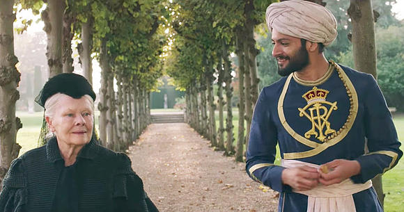

Victoria & Abdul Movie Review
Date: March 29, 2018
I watched Victoria & Abdul on October 10, 2017 at Michigan Theater. It is about Queen Victoria (r. Queen of UK 1837-1901, Empress of India 1876-1901) and the close relationship with her personal servant Abdul Karim (office 1892-1901). Abdul arrives from India to present the Queen with a gift as part of her Diamond Jubilee and she quickly comes to enjoy him. Her favoritism, especially of an Indian Muslim, infuriates her household.
The movie is cheery to watch. The scenes are bright with lots of colors and the majesty of the monarch. The dialogues are quick, even the negative scenes did not draw out for long. However, the overall plot was not particularly engaging. As a consequence of the light mood and quick scenes, it was difficult to be drawn in, held in suspense, or seem particularly invested in the characters. Judi Dench plays a fantastic Queen Victoria as the role requires it. Ali Fazal as Abdul Karim, on the other hand, was disappointing. His doughy-eyes and blind love for the Queen and an empire which colonized his people was confusing. This leads to the larger issue of there being little plot development throughout the movie.
In the beginning, Abdul adores the Queen, and he still does at the end. The Queen immediately likes him, and she continues to until her end. The household is against their relationship since the beginning, and remains to be at the end as well. If the movie was comfortable with adjusting the true story of the relationship (as said in the beginning of the movie, "Based on real events ... mostly") then they would have done better to include more opportunities for development. Two conflicts of the movie - Abdul's lie about the Mutiny and his knighthood - are too easily resolved. Victoria & Abdul would have done well to allot time for more plot and character development.
Personally, I am uncomfortable by the whitewashing of the film. First, Abdul is blindly devoted to the Queen and empire and little to no effort is made for him to explain how he reconciles working for the Queen while she is also the colonizing ruler of India. He comes off as incompetent and and two-dimensional. His ignorance and lack of a desire for agency appears as him to be used as a token by the Queen to express her frustrations at her household, family, and resentment at her role. He is ultimately selfish when he cares more about his own position and closeness to the Queen instead of listening to the request of his friend Buksh, who is clearly suffering in Britain and humiliated by being remaining a lowly servant.
Second, it is uncomfortable and confusing for the Queen to be seen as a progressive supporter of people of color and India when she continues to act uncaring of the subcontinent. In the film, she does not seek out the details of the Mutiny, silences her prime minister when he talks about about famine and problems abroad, and reacts indifferently to Abdul when he explains the tragedies of the Peacock Throne and the Koh-i-Noor diamond. She is ultimately more concerned about using Abdul as a pawn for her own frustrations, so the film's attempt to paint her a progressive champion of race is futile.
The historical inaccuracies of the movie deserve their own section. I cringed when "Urdu" was used because historically it was called Hindustani at the time. However, I decided to solely analyze this piece as a film of it's own. More information on inaccuracies can be found on sites such as these.
Ultimately, I would not recommend this film for enjoyable or learning purposes. As a Muslim and South Asian with a great interest for that time period, much of the movie was cringeworthy to watch. Abdul's immaturity, the failed attempt to paint Queen Victoria as progressive, lack of plot and character development, and historical inaccuracies make the film difficult to swallow. I hope that more high profile movies with good intentions which try to positively portray the Indian subcontinent come about and that they stay true to the historical context in addition to being light and comedic like Victoria & Abdul is.